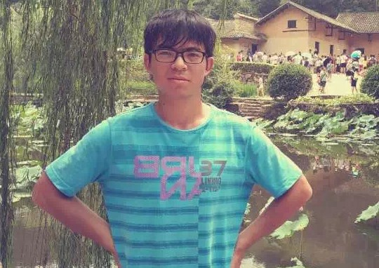

 |
| Zhuo Su (苏卓) |
| My Blog | Experiences | Publications | Code |
|
Since October 2018, I have been working towards the PhD degree at the research unit CMVS, University of Oulu, advised by Dr. Li Liu. My research interests include learning compact and efficient feature representations and their applications to computer vision. Before that, I received my master's degree and bachelor's degree from Beihang University. Currently, I am looking for Possible Internship opportunities in computer vision and machine learning. Here is My CV. Please contact me at zuike2013@outlook.com Email: zhuo.su at oulu.fi |
Recent Papers: |
|
Education: |
|
Professional Experiences: |
|
The webpage template is from Georgia Gkioxari ,Jon Barron and Deng Cai